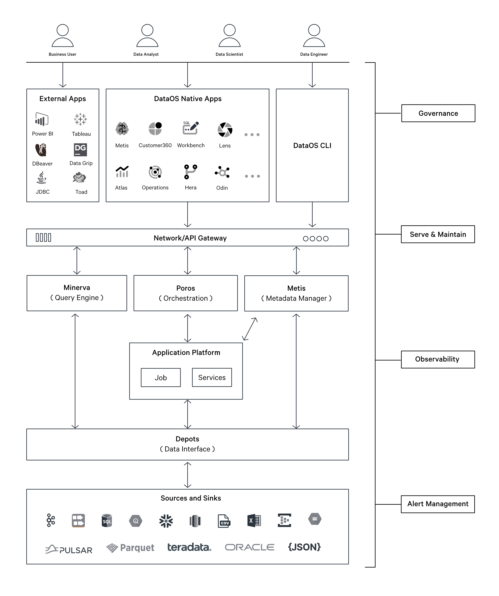
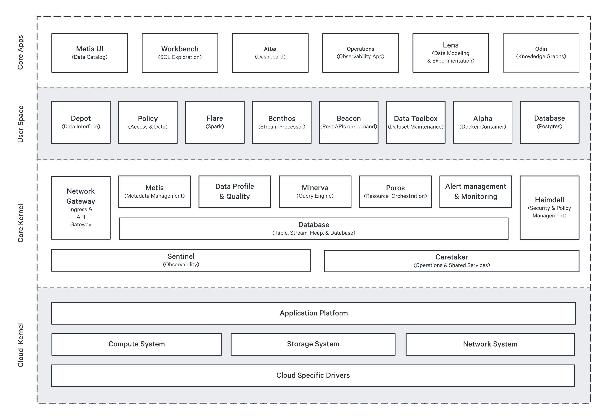

Architecture of DataOS¶
DataOS is the data operating system built to create, deploy & manage domain-specific data products at scale. Its architecture has been designed to enhance experience of data developers, decrease reliance on IT teams, democratize data, provide tangible ROI faster, and accelerate creation of data products. This page elucidates how the design of DataOS implements this data-first architecture.
Each leads us to the same consensus - a modular, composable, and interoperable data infrastructure which is built on open standards - making it extensible, future-proof, and flexible enough to be used with your existing tools & infrastructure, while also empowering implementation of new patterns & frameworks, such as Data-first Stack, Data Mesh or Data Developer Platform.
Microservices Architecture¶
DataOS is a distributed cloud computing system based on micro-services architecture. This makes the services within its collection -
- Loosely coupled
- Independently deployable
- Work with different technologies and programming languages
- Independently scalable
Each service within DataOS is self-contained and implements a single business capability within a bounded context. So each data management capability, such as data cataloging, access control or data security, is governed by a different service.
These are some of the services of DataOS acting as a cohesive whole to form the unified architecture for data infrastructure:
Heimdall¶
Heimdall is the governance engine for all access control within DataOS. Whether it is access to a dataset, an API path or other applications & services of the operating system, Heimdall acts as the Policy Decision Point (PDP) for ingress and authorizations.
Metis¶
Metis is the metadata manager of DataOS. It collates & curates operational metadata, technical & business metadata from various data sources, as well as DataOS Resources. Metis serves this metadata via a graphical user interface for consumption by data developers. Combined with Odin (service for Knowledge Graphs), it forms a semantic web to generate ontologies and creates a digital twin of an organization's data infrastructure.
Gateway¶
A service which runs on top of the query engine, Minerva, and is responsible for managing Minerva clusters, user authentication (via calls to Heimdall), as well as data policy decisions. It acts as the PDP for data filtering and masking so that the data is not masked/filtered at the source directly, but at the time of query parsing.
Caretaker¶
It captures, stores & serves information related to pods (such as pod states & aggregates) or compute nodes. It maintains the historical data in blob storage while serving the current states of running pods via the Operations app.
The low coupling and high functional cohesion of the above services, and others, capacitate DataOS to support fault isolation, as well as polyglot programming while building new applications & features, as services do not need to share the same libraries or frameworks. This also makes DataOS agile and future-proof, as new technologies & data management capabilities can be added rapidly and reliably.
These services persist their own data & state in a dedicated database. They communicate with one another via well-defined REST APIs. All network communications are based on a zero-trust principle. This means that access to pods, services, or applications requires explicit configurations in the form of Network Policies every time they are accessed, whether from applications within or without DataOS. Any communication from outside DataOS’ private network must pass through a network gateway (API Gateway).
Studying the implementation of the micro-services design of DataOS helps comprehend the granular details of the operating system, but since the system automates & abstracts all the underlying complexities & provisioning, a data developer should focus entirely on the User Space to leverage various data-management capabilities.
Let us look at DataOS from the perspective of a data infrastructure.
Data Infrastructure¶

The User Space is the layer of DataOS where data developers work. A data developer, or a data product developer, interacts with the system through interfaces in the user layer.
- Depot acts as the data interface between the source systems and DataOS Stacks; as well as other Resources. Various services, like the catalog (Metis) and the query engine (Minerva) also leverage depots to establish communication for querying and data modeling jobs.
- The Application Platform encapsulates DataOS Resources & programming paradigms with which a data producer works. This is where data ingestion & processing jobs are written, long-running services & applications are configured, and ETL/ELT or Reverse ELT pipelines are built.
- Poros is the orchestrator of all DataOS Resources. It manages their lifecycle, versioning and works to reconcile the current state of Resources with the desired state. It is based on the operator pattern of Kubernetes.
- Minerva is a federated query engine. It executes queries on the coordinator-worker node pattern. With Minerva, the storage and compute are decoupled and can be scaled independently. Minerva represents the compute/cluster layer, whereas the underlying data sources represent the storage layer.
- Metis provides the cataloging service. It implements a pull-based mechanism for scanning metadata from various data sources.
- Data developers & operators interact with these components via the interfaces provided in the form of CLI, GUI and APIs.
Throughout this journey of data across various applications & services, the data remains secured with customized access & data policies, and the user has control & observability over both the data & the infrastructure.
Infrastructure to build data-products¶
DataOS specs resemble the principles of a Data Developer Platform, such as declarative infrastructure management and dynamic configuration management with access control & version control systems in place, among others. This makes it the infrastructure of choice for creating, deploying and managing data products at scale.
- The depots & APIs provide the input/output ports, while the stacks like Flare & Benthos are used to configure the transformation logic on the data products. All the while, the system provides you with end-to-end observability, monitoring & customizability to define metrics or SLOs for different stages of the data product’s lifecycle, and provision computes & clusters with DataOS Resources on demand.
- The separation of Compute & Storage allows the users to scale both independently & optimize costs while building & experimenting with new data products.
- The native governance with Heimdall & Gateway ensures granular access control on every aspect of data products, Metis provides the ability to discover, understand & categorize the data products, and Poros automates the orchestration.
- The interfaces of applications like Lens, Workbench & Atlas enable data developers to experiment with data products quickly and in a self-serve manner.
- The niche capabilities as provided with DataOS Resources like Service & Alpha stack allow one to create data products even for the edge cases.
- Abstractions over all the parts of the aforementioned micro-services architecture and the open standards used while building them makes the system flexible and customizable towards the addition of new tools & technologies.
Having an operating system to perform all these tasks means that the developer experience is consistent & seamless, and the data product developers can focus on & accelerate building of data products to solve business problems rather than get bogged down with solving the problems for data teams of each domain within the organization.
Let us delve into how such a vast system with complexities underneath can be classified as an Operating System.
Design of the Operating System¶
The architecture of DataOS can be segregated into three logically separated layers - User Space, Core Kernel & Cloud Kernel.

Cloud Kernel¶
It is an abstraction layer over the cloud APIs of cloud providers like AWS, GCP & Azure. It makes DataOS cloud-agnostic, meaning the user is not locked-in with any specific vendor. DataOS uses Kubernetes to containerize its applications & automate the provisioning & control of node pools. This layer is deployed as Infrastructure as Code (IaC) to provide consistency, idempotency, reliability, reusability & automation.
It abstracts away the complexities of managing distributed systems, including tasks like workload distribution, resource provisioning, load balancing, and fault tolerance, making it easier for the Core Kernel & User Space to utilize the cloud resources seamlessly.
Core Kernel¶
It provides the next set of abstractions over the cloud layer, translating low-level APIs (low-level in terms of communication & function) to high-level APIs. Core Kernel serves as the traditional operating system kernel, responsible for OS functionalities that are independent of cloud-specific features.
From a user’s perspective, it handles system resources such as CPU scheduling, memory allocation and provides input/output ports for applications & services running on top of it. Core kernel incorporates drivers to enable communications between services and enforces access controls for both ingress & egress.
User Space¶
User Space represents the domain of the operating system where data developers work. It allows the developers to isolate & segregate their work from other users, providing multi-tenancy to develop business-domain-specific data products. All the DataOS Resources are created, deployed & managed by users in this layer. User Space is itself segregated into two logically separated layers, viz.
User Layer¶
This layer can be envisioned to be the layer providing the user interfaces for various applications of DataOS, such as Atlas and Workbench. It also has a Command Line Interface to perform CRUD operations on DataOS Resources and trigger user processes. It is where DataOS Resources such as Depots are deployed, and ETL pipelines are built.
System Layer¶
This layer acts as a bridge between the Core Kernel & the User Layer. It manages system-level services and libraries that the user applications can access for lower-level functionalities. A User in DataOS can be either a person or a machine/application - the system layer is where machine/application-related processes are executed. System calls to the Kernels are also made by this layer.
The multi-layered architecture allows DataOS to make updates to the core capabilities of the system & cloud infrastructure without affecting the day-to-day operations of the business. It provides a unified architecture for the data infrastructure by abstracting the complexities of the microservices architecture.
The most important advantage that DataOS’ architecture provides over other data infrastructures is overcoming the fragmented developer experience and disjointed observability. The Interfaces of DataOS, abstractions provided by the multilayered structure of the OS and composability of DataOS Resources together enable data developers & operators to collaborate, lower the integration & operational costs, and scale & speed-up data initiatives.